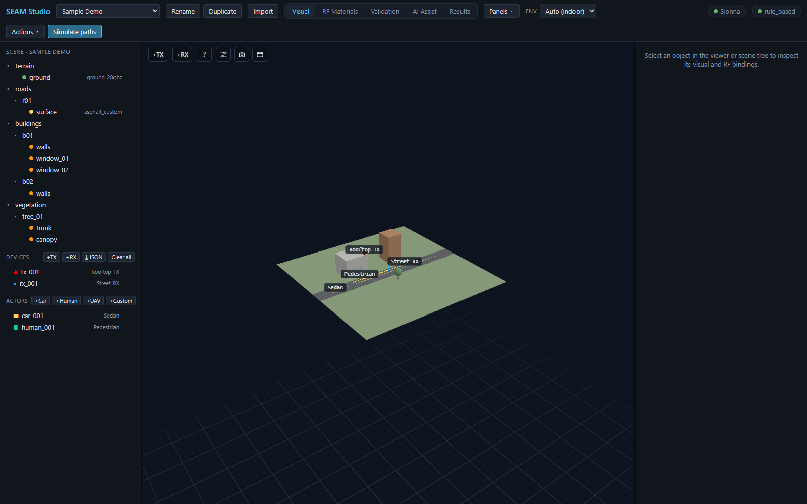
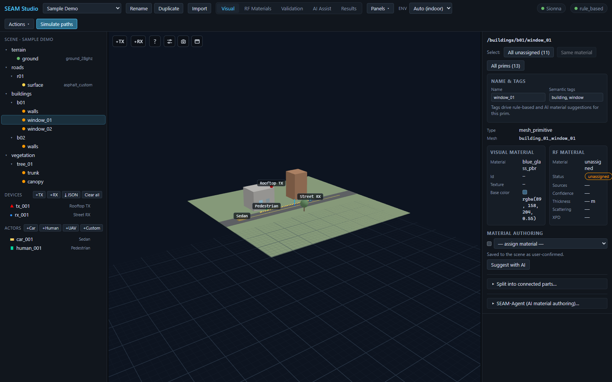

시작하기: 첫 실행과 UI 둘러보기
이 가이드는 설치 직후부터 SEAM Studio 화면에 익숙해질 때까지를 다룹니다: 툴바, 다섯 가지 모드 탭, 씬 트리, 인스펙터, 도킹 가능한 패널. GPU·Sionna·LLM 없이도 내장 Mock 백엔드만으로 여기 나오는 모든 내용이 동작합니다. 전체 설치 절차는 INSTALL.md를 참고하세요.
1. 설치와 실행
SEAM Studio를 실행하는 방법은 두 가지입니다. 하나를 고르세요.
경로 A — pip 설치 (패키지 앱)
pip install seam-studio
seam-studioseam-studio 명령은 http://127.0.0.1:8000 에 서버를 띄우고 브라우저를 자동으로 엽니다. 첫 실행 시 ~/.seam/projects 에 Sample Demo 프로젝트를 자동 생성하므로 앱이 빈 화면으로 시작하지 않습니다. 유용한 플래그: --port 9000, --project-root D:\twins, --no-browser.
경로 B — 소스 체크아웃 (개발 서버)
저장소를 클론하고 설치 스크립트를 한 번 실행한 뒤 (INSTALL.md에 단계별 설명이 있습니다) 두 서버를 띄웁니다:
# Windows
powershell -ExecutionPolicy Bypass -File scripts\start.ps1
# Linux/macOS
bash scripts/start.sh백엔드는 :8000, Vite 개발 프론트엔드는 http://localhost:5173 에 뜹니다 — 브라우저에서는 :5173 주소를 여세요. 이 가이드는 개발 서버 URL 기준으로 설명하지만 패키지 앱도 화면은 동일합니다.
2. 툴바

tx_001 / rx_001, 액터 car_001 / human_001, 그리고 툴바.상단 툴바에는 왼쪽부터 다음이 있습니다:
- SEAM Studio 타이틀과 프로젝트 셀렉트. Sample Demo 프로젝트가 자동 로드되며, 여기서 프로젝트를 전환합니다.
- Rename / Duplicate — 현재 프로젝트의 표시 이름을 인라인으로 바꾸거나(Enter 저장, Esc 취소), 프로젝트 폴더 전체를 복제해 사본을 엽니다.
- Import — 새 씬을 새 프로젝트로 불러옵니다. Mitsuba XML 파일 (메시·텍스처가 든 .zip 번들도 가능) 또는 좌표로 가져오는 OpenStreetMap 사각형 영역 중에서 고릅니다.
- 다섯 가지 모드 탭:
탭 하는 일 Visual 3D 씬 탐색, 픽킹, 씬 트리, 인스펙터. RF Materials RF 재질별 색 오버레이; 드롭다운으로 지정. Validation 씬 검증 경고(미지정 재질 등). AI Assist AI 재질 제안과 검토·승인 워크플로. Results 경로/라디오맵/빔포밍/채널 등 모든 시뮬레이션. - Panels ▾ — 도킹 가능한 패널 전체를 현재 도킹 상태와 함께 나열합니다. 행을 클릭하면 플로팅됩니다(5절 참고).
- Env 셀렉트 —
Auto (indoor),Indoor,Outdoor.Auto로 두면 앱이 환경을 추론해 그에 맞는 솔버 프리셋을 적용하고, 추론된 값이 괄호 안에 표시됩니다. - 상태칩 두 개:
- Sionna / Mock only — 실제 레이 트레이싱 백엔드 설치 여부. UI를 익히는 단계에서는
Mock only로 충분합니다. - 제공자 이름(예:
rule_based) / AI off — 활성화된 AI 제안 제공자.
- Sionna / Mock only — 실제 레이 트레이싱 백엔드 설치 여부. UI를 익히는 단계에서는
- Actions ▾ (Validate, Compile RF, Beamforming, Export RFData, Delete project…)와 파란 Simulate paths 버튼.
3. Visual 모드 둘러보기
Visual 탭에 머문 채 왼쪽 사이드바를 보세요.
씬 트리
트리는 씬 계층 구조(/buildings/b01/walls, /roads/r01/surface, …)를 그대로 보여줍니다. 메시 행마다 RF 재질 지정 상태를 나타내는 상태 점, 지정된 재질 id, 그리고 뷰어에서 숨기고 보이는 눈 토글(◉/◌)이 붙습니다. 행을 클릭하면 오브젝트가 선택되고, Ctrl+클릭으로 다중 선택합니다.
Devices 섹션
Devices 헤더에는 버튼 네 개가 있습니다:
- +TX / +RX — 송신기/수신기를 추가합니다.
- ⤓ JSON — JSON 파일에서 TX/RX 디바이스를 불러옵니다(직교 x/y/z 또는 위경도 lat/lon; point_import.md 참고).
- Clear all — 모든 무선 디바이스를 제거합니다(두 번 클릭해 확인).
Sample Demo에는 tx_001("Rooftop TX", 빨강 ▲)과 rx_001("Street RX", 파랑 ●)이 들어 있습니다. 각 행에는 × 삭제 버튼이 있습니다.
Actors 섹션
액터는 자체 RF 형상을 가진 움직이는 산란체입니다. Actors 헤더의 +Car, +Human, +UAV, +Custom 으로 추가합니다. 데모에는 도로를 달리는 car_001(승용차)과 보행자 human_001이 있습니다.
탐색과 픽킹
- 좌드래그 — 씬 주위를 궤도 회전(orbit).
- 우드래그 — 화면 이동(pan).
- 휠 스크롤 — 줌.
- 오브젝트 클릭 — 선택(오른쪽 인스펙터가 갱신됩니다). 디바이스나 액터를 클릭하면 드래그로 옮길 수 있는 X/Y/Z 이동 기즈모도 나타납니다.
4. 인스펙터

window_01의 인스펙터 — 시맨틱 태그 building, window, visual 재질 blue_glass_pbr, RF 재질은 아직 미지정(unassigned).트리나 뷰포트에서 창문 프림(/buildings/b01/window_01)을 클릭하세요. 인스펙터에는 위에서부터 다음이 나옵니다:
- Name & tags — 프림의 표시 이름과 쉼표로 구분된 Semantic tags (여기서는
building, window). 태그는 규칙 기반·AI 재질 제안의 근거가 되며, 두 필드 모두 Enter 또는 포커스 아웃 시 저장됩니다. - 나란히 놓인 두 컬럼:
- Visual material — 오브젝트가 어떻게 보이는가: 재질 이름/id (
blue_glass_pbr), 텍스처, 기본 색. - RF material — 전자기적으로 어떻게 행동하는가: 재질, 지정 상태 배지(데모의 창문은
unassigned로 시작), 소스, 신뢰도, 두께, 산란, XPD.
이 분리가 이 앱의 핵심 아이디어입니다. 파란 유리 텍스처만으로는 RF 관통손실을 확정할 수 없으므로, 두 바인딩을 따로 저작하고 검증합니다.
- Visual material — 오브젝트가 어떻게 보이는가: 재질 이름/id (
- Material authoring — 이를 해결하는 모든 방법이 한곳에 모여 있습니다:
- RF 재질을 직접 지정하는 드롭다운(user-confirmed로 저장),
- Suggest with AI — AI 제공자에게 제안을 요청하고 AI Assist 검토 화면으로 이동,
- Split into connected parts… — 병합된 메시(예: 도시 블록 전체가 한 덩어리로 익스포트된 경우)를 부품별 프림으로 분리,
- SEAM-Agent (AI material authoring)… — 메시의 멀티뷰 렌더를 캡처·분할하고 영역별 RF 재질을 근거와 함께 제안하는 에이전트.
디바이스를 선택하면 대신 편집 가능한 디바이스 카드(위치, 출력, 안테나 어레이, 지향)가, 액터를 선택하면 포즈·크기·RF 재질·부착 디바이스·웨이포인트 궤적 편집기가 나옵니다.
5. 도킹 가능한 패널
결과 패널(Metrics dashboard, Channel analysis, UE trajectory, Scenario playback, ML dataset)은 포토 에디터 스타일로 도킹할 수 있습니다. 각 패널 헤더 오른쪽의 작은 버튼으로 옮깁니다:
- ◧ / ◨ — 왼쪽/오른쪽 사이드바로 도킹.
- ⧉ — 뷰포트 위에 뜨는 플로팅 창으로 분리. 헤더를 드래그해 옮기고, 가장자리를 드래그해 크기를 바꿉니다.
플로팅한 패널은 모드 탭을 바꿔도 그대로 유지됩니다 — Channel analysis 패널을 띄워 두면 Visual 모드에서 씬을 편집하는 동안에도 계속 보입니다. 툴바의 Panels ▾ 메뉴로는 어느 모드에서든 모든 패널에 접근할 수 있습니다: 행을 클릭하면 플로팅되고(이미 떠 있으면 앞으로 가져옴), 행 옆의 ◧/◨ 버튼으로 다시 도킹합니다.
다음 단계
15분 튜토리얼을 따라 해 보세요 — 재질 지정부터 경로 시뮬레이션, 라디오맵, ML 데이터셋 내보내기까지 전체 루프를 Mock 백엔드만으로도 한 바퀴 돌 수 있습니다.
관련 문서
- TUTORIAL.md — 15분 첫 세션 튜토리얼
- INSTALL.md — 전체 설치 가이드(Sionna RT, 로컬 LLM)
- architecture.md — 프론트엔드·백엔드·엔진 구조
- scene_format.md —
.seam프로젝트/씬 포맷 - rf_materials.md — RF 재질 라이브러리
- ai_assistant.md — AI 재질 제안 워크플로